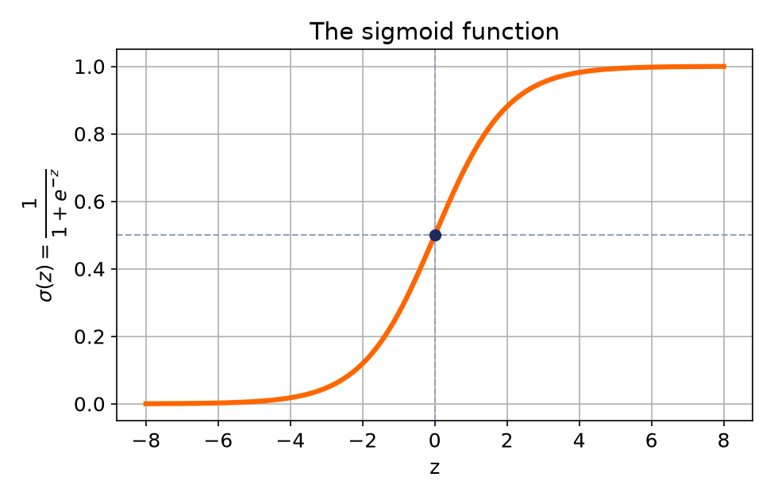
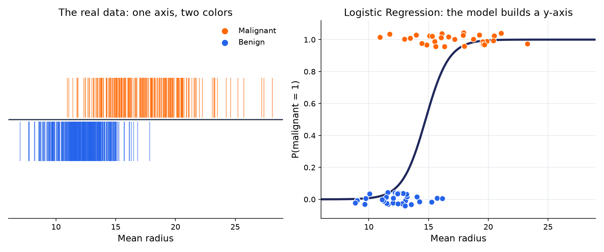
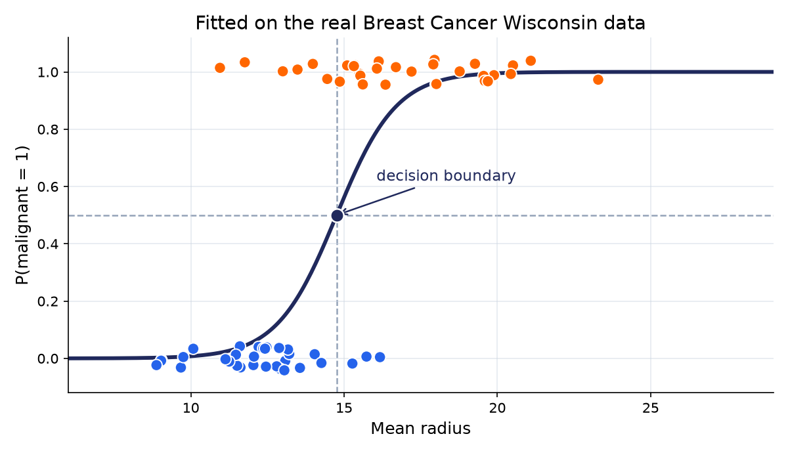
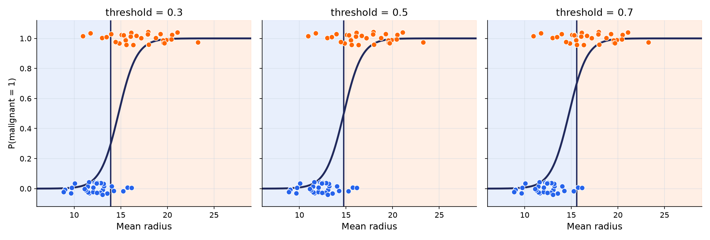
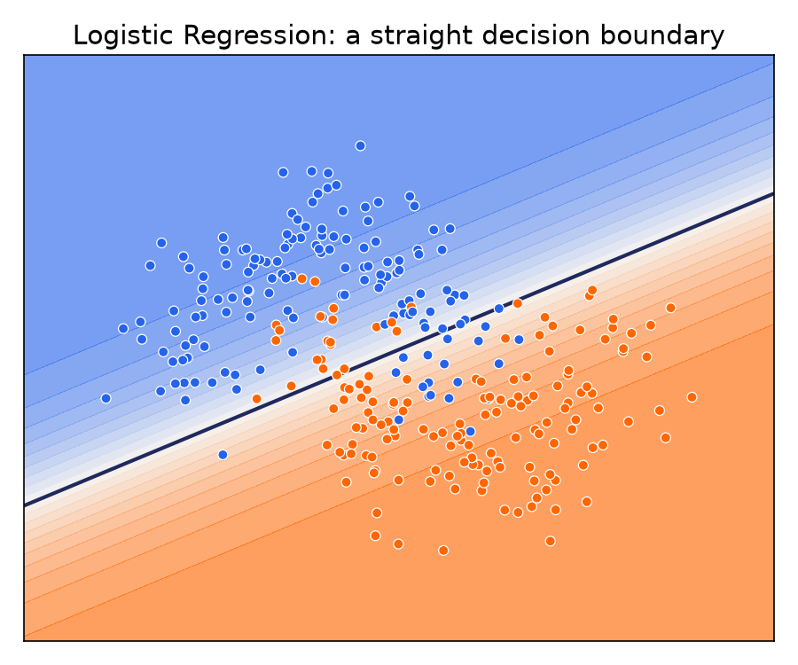
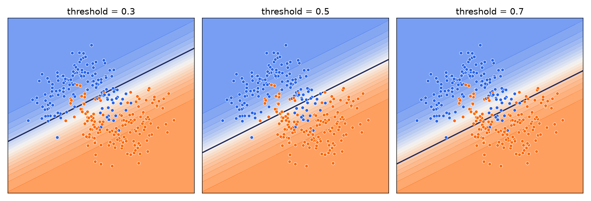

بهجای اینکه مستقیم بگوییم «این ایمیل اسپم است»، بهتر است بگوییم «۹۲٪ احتمال دارد اسپم باشد».
احتمال بین نمونههای مختلف قابل مقایسه است
میتوانیم آستانهی تصمیم را متناسب با مسئله تنظیم کنیم
میزان «اطمینان» مدل را هم حفظ میکند، نه فقط یک برچسب خام
تابع کلیدی
تابع Sigmoid

σ(z) = 1 / (1 + e−z)
خروجی همیشه بین ۰ و ۱ است، مهم نیست z چقدر بزرگ یا کوچک باشد
z = 0 → دقیقاً وسط، σ(z) = 0.5
مدل کامل · یک ویژگی
همان ترکیب خطی هفته قبل، رد شده از sigmoid
z = w·x + b
↓
P(کلاس = ۱) = σ(z)
رگرسیون لجستیک، دقیقاً همان ترکیب خطی رگرسیون معمولی را میسازد؛ فقط قبل از خروجی دادن، آن را از sigmoid رد میکند.
دیدن روی دادهی واقعی
این فرمول، دقیقاً چه تبدیلی روی داده انجام میدهد؟

دیتاست واقعی Breast Cancer Wisconsin: چون طبقهبندی است نه رگرسیون، دادهی خام (چپ) اصلاً محور y ندارد - فقط یک محور (شعاع میانگین) و رنگ نمونهها.
محور y در نمودار راست (احتمال) بخشی از دادهی خام نیست؛ چیزی است که خودِ مدل میسازد.
مرز تصمیم
همین منحنی، حالا با مرز تصمیم مشخصشده

جایی که منحنی از ۰.۵ رد میشود، مرز تصمیم مدل است - اینجا حدود شعاع = ۱۴.۸.
با یک ویژگی، مرز تصمیم فقط یک نقطه روی محور است؛ کمتر از آن «خوشخیم»، بیشتر «بدخیم» پیشبینی میشود.
آستانه
آستانه ۰.۵ یک قرارداد است، نه یک قانون
در تشخیص بیماری، اینکه مدل یک بیمار واقعی را «سالم» تشخیص بدهد معمولاً خیلی گرانتر از این است که یک فرد سالم را بهاشتباه «بیمار» علامت بزند
→ آستانه را پایین میآوریم.
در فیلتر اسپم، برچسبزدن اشتباه یک ایمیل مهم بهعنوان اسپم، آزاردهندهتر از رد شدن چند اسپم واقعی است
→ آستانه را بالا میبریم.
اسمهای رسمی این دو نوع خطا (False Negative / False Positive) را هفتهی بعد در «ارزیابی مدل» با جزئیات میبینیم؛ فعلاً همین شهود کافی است.
دیدن اثر آستانه
همان مدل، سه آستانهی متفاوت

مدل عوض نشده؛ فقط جایی که تصمیم عوض میشود (خط عمودی) جابهجا شده. آستانهی پایینتر یعنی راحتتر به «بدخیم» مشکوک میشویم.
آموزش مدل
مدل چطور بهترین w و b را پیدا میکند؟
Loss = −[y·log(p) + (1−y)·log(1−p)]
معروف به Log Loss
هر چقدر احتمال پیشبینیشده (p) به برچسب واقعی (y) نزدیکتر باشد، جریمه کمتر است
پیشبینی مطمئن ولی غلط، بیشترین جریمه را میگیرد
الگوریتمی به اسم Gradient Descent، وزنها را قدمبهقدم عوض میکند تا مجموع این جریمه روی کل دادهی آموزشی کمینه شود - دقیقاً همینطور w ≈ 1.03 در مدل «شعاع میانگین» پیدا شد
اگر برچسب واقعی «بدخیم» باشد (y = 1):
p = 0.9 → Loss ≈ 0.10 (کم) اما
p = 0.1 → Loss ≈ 2.30 (خیلی زیاد)
تفسیر مدل
وزن واقعاً چه معنایی دارد؟
Odds = p / (1−p)
نسبت «احتمال وقوع» به «احتمال عدم وقوع»
در مدل «شعاع میانگین تومور»، وزن w ≈ 1.03 به دست آمد (همان منحنی چند اسلاید قبل)
یعنی: هر ۱ واحد افزایش در شعاع میانگین، شانس بدخیمبودن را افزایش میدهد - به همین دلیل منحنی رو به بالا حرکت میکند
وزن منفی دقیقاً برعکس عمل میکند: افزایش آن ویژگی، احتمال کلاس ۱ را کم میکند
در ریاضیات دقیقتر، z همان log(Odds) است - ولی برای این درس، همین شهود «وزن مثبت/منفی» کافی است
بخش دوم · گسترش مدل
حالا با بیش از یک ویژگی چه اتفاقی میافتد؟
z = w1x1 + w2x2 + ⋯ + wnxn + b
یک وزن (w) مستقل برای هر ویژگی، بهعلاوهی یک بایاس (bias) مشترک
فرمول همان z = w·x + b است که تا اینجا با یک ویژگی دیدیم؛ فقط اینبار چند ویژگی داریم که هرکدام وزن خودشان را میگیرند
هر ویژگی وزن خودش را دارد: وزن مثبت یعنی افزایش آن ویژگی، احتمال کلاس ۱ را بالا میبرد؛ وزن منفی برعکس
دیتاست Breast Cancer Wisconsin دقیقاً همینطور کار میکند: ۳۰ ویژگی → ۳۰ وزن، بهعلاوهی یک b
یک مثال عددی
محاسبهی z با دو ویژگی واقعی
یک بیمار واقعی از دیتاست، و وزنهای واقعی یک مدل دو-ویژگی که روی کل دیتاست آموزش دیده:
ویژگی
مقدار بیمار
وزن آموختهشده
جمله
شعاع میانگین (mean radius)
17.35
1.05
18.15
بافت میانگین (mean texture)
23.06
0.22
5.00
بایاس (bias, b)
-
−19.67
−19.67
z = 18.15 + 5.00 − 19.67 = 3.48 → σ(3.48) ≈ 0.97 → مدل ۹۷٪ مطمئن است این تومور «بدخیم» است - و طبق دیتاست، واقعاً بدخیم بود
این وزنها فرضی نیستند: خروجی واقعی LogisticRegression.fit() روی دیتاست Breast Cancer Wisconsinاند - دقیقاً همان چیزی که چند اسلاید قبل با Log Loss و Gradient Descent توضیح دادیم.
مرز تصمیم با دو ویژگی
در دو بعد، آن نقطه به یک خط تبدیل میشود

همان قانون قبلی: جایی که σ(z) = 0.5 است، یعنی z = 0. با یک ویژگی این مرز یک نقطه بود؛ با دو ویژگی (اینجا یک دیتاست ساختگی دوبعدی) یک خط راست است.
با سی ویژگی مثل Breast Cancer Wisconsin، همین مرز یک «ابرصفحهی» خطی در فضای سیبعدی میشود - دیگر قابل دیدن نیست، ولی مفهوم دقیقاً همان است.
همان اثر، در دو بعد
آستانه در دو بعد هم همینطور کار میکند

دقیقاً مثل نسخهی تکویژگی: مدل عوض نشده، فقط اینبار خط مرز (بهجای نقطه) جابهجا شده.
هایپرپارامترهای مهم
سه هایپرپارامتر که باید بشناسید
penalty
نوع Regularization روی ضرایب (پیشفرض 'l2')؛ همان ایدهی Ridge/Lasso هفته قبل، اینجا هم از بیشبرازش جلوگیری میکند.
C
معکوس قدرت Regularization. برخلاف alpha: C کوچکتر = جریمهی قویتر (سادهتر)، C بزرگتر = جریمهی ضعیفتر (آزادتر).
solver
الگوریتم بهینهسازی داخلی. فقط دانستن اینکه گزینههای مختلفی هست کافی است؛ جزئیاتش خارج از دوره است.
یک ترکیب خطی، رد شده از sigmoid، یک احتمال میسازد - از یک ویژگی تا سیتا.
قدم بعدی: حالا که یک طبقهبند داریم، از کجا بفهمیم واقعاً خوب است؟